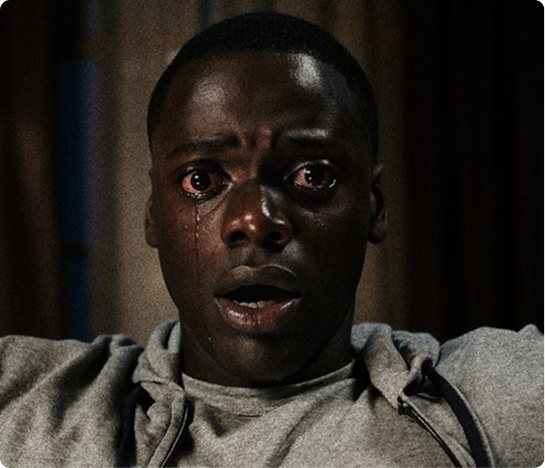
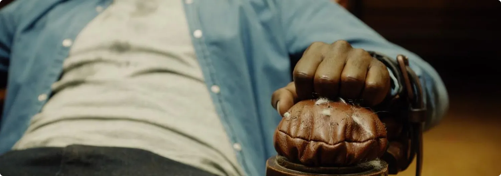
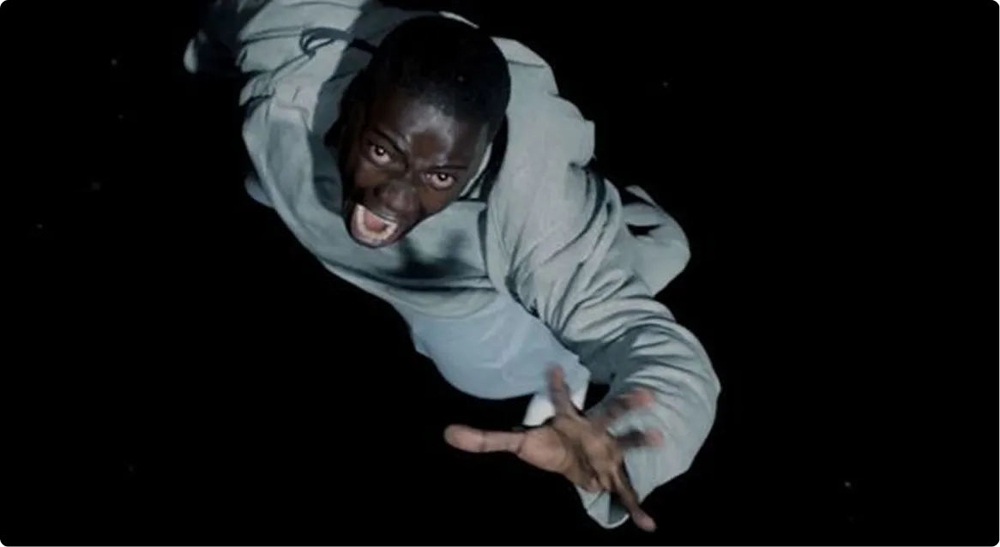
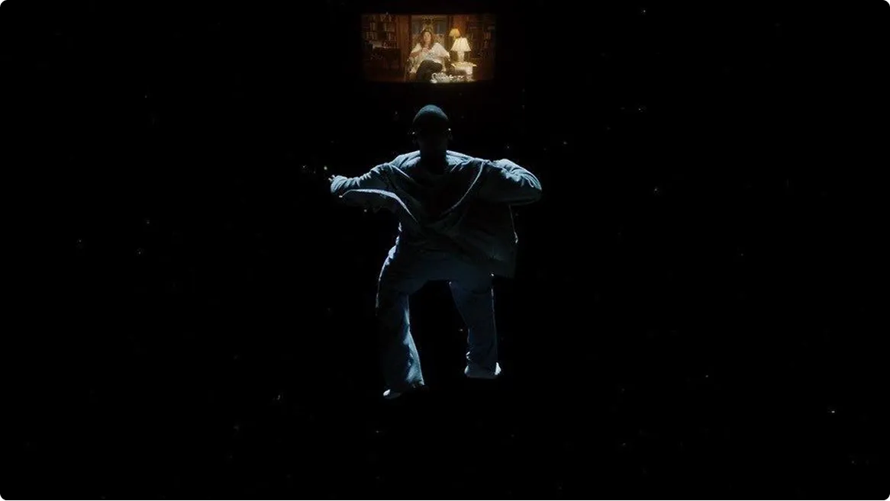

Потеря контроля над собственным телом
На самом базовом уровне Sunken Place символизирует полную
потерю контроля. Крис, главный герой, остаётся жив, он слышит
и видит,что происходит вокруг, но не имеет
возможности повлиять на события— его тело перестаёт
ему принадлежать.


Этот образ напрямую связан с главной темой фильма: тело
чернокожего персонажа становится объектом эксплуатации. Семья
Армитаж по сути превращает людей в «сосуды»
для чужого сознания. Sunken Place показывает предельную степень
лишения свободы — когда человек сводится к роли
простого наблюдателя собственной жизни.
Метафора социального бессилия
Однако значение этого образа гораздо глубже. Режиссёр использует
данное явление как метафору социальной беспомощности.
Крис видит происходящее, понимает угрозу и даже пытается
сопротивляться, но его голос буквально не слышен. Это
напоминает ситуацию, когда человек сталкивается
с несправедливостью, но не имеет возможности
повлиять на систему. Он может осознавать проблему,
но остаётся «запертым» в положении
наблюдателя.
Именно поэтому сцена гипноза вызывает у зрителей такой
сильный отклик: страх здесь не связан с монстрами или
насилием, а с ощущением полной утраты влияния
на собственную судьбу.
Визуальный язык страха

Важно и то, как Sunken Place показано визуально. Вместо
привычных хоррор-образов фильм использует минимализм: пустоту,
темноту и медленное падение. Камера отдаляется от героя,
подчёркивая его изоляцию.

Эта сцена работает на психологическом уровне. Зритель
буквально чувствует дистанцию между Крисом и реальностью.
Маленький экран, через который он наблюдает
за происходящим, усиливает ощущение бессилия
и отчуждения.
Почему этот образ стал культовым
После выхода фильма выражение Sunken Place стало широко
использоваться в культуре и социальных обсуждениях. Люди
начали применять его как метафору состояния, когда человек
осознаёт проблему, но не может ничего изменить. Именно
поэтому этот образ считается одним из самых сильных элементов
фильма. Он превращает обычный хоррор-приём в глубокий
символ психологического и социального подавления.